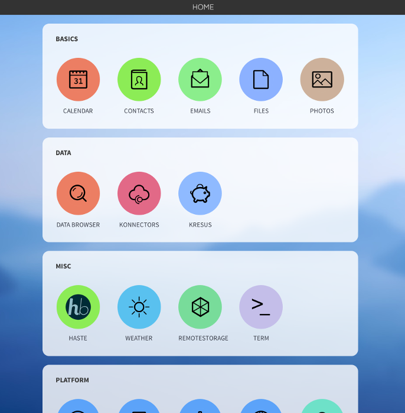
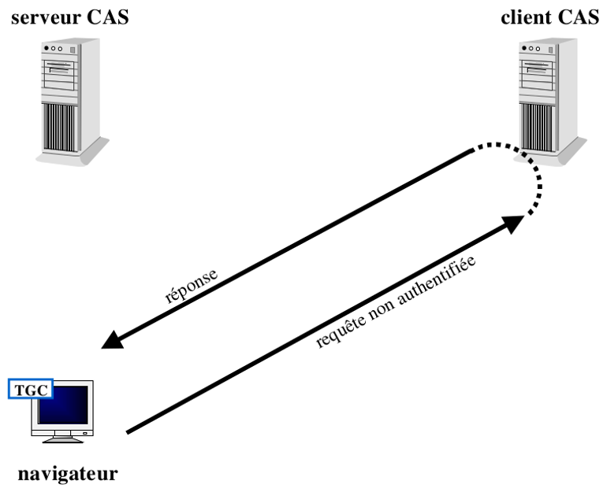
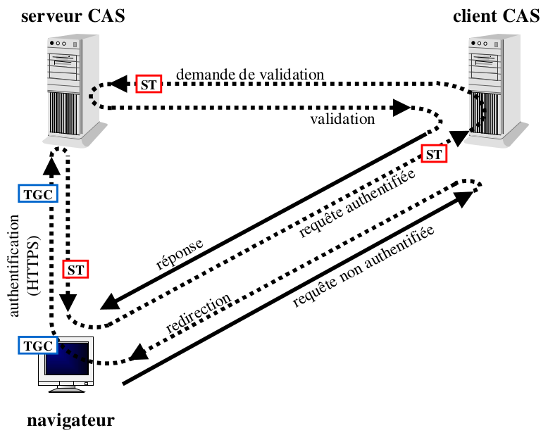
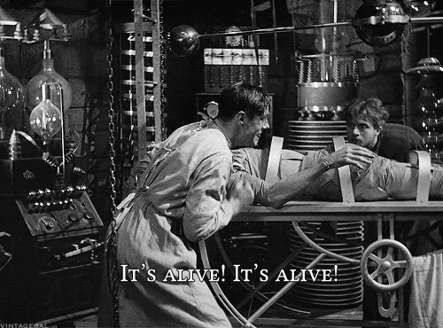
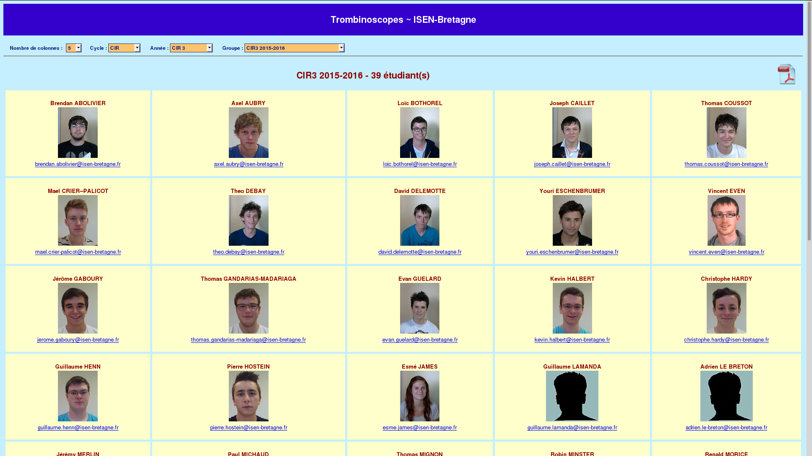
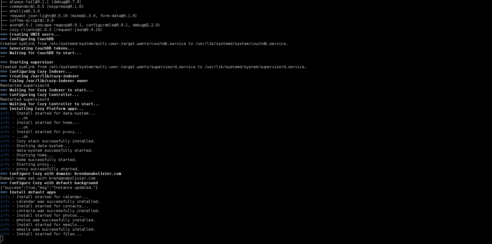

Cozy Cloud
Soutenance de stage
Brendan Abolivier - @BrenAbolivier
Rapide présentation
Cozy Cloud, c'est quoi ?
- Start-up
- Créé en 2012
- 15 employés
- Télétravail complet
Cozy
- Plateforme applicative
- Cloud personnel
- Centralisation et interaction des données
- Respect de la vie privée
La mission
Contexte
Partenariat Cozy Cloud <-> ISEN Brest
Problème
Limitation des services de l'ISEN proposés dans Cozy
Solution
“There's an app for that.”
Et concrètement ?
Développement d'une application pour naviguer dans l'ENT de l'ISEN depuis Cozy.Contrainte : Le tout en “single sign-on forever”
CAS
Single sign-on: One auth to rule them all
CAS = Central Authentication ServiceRapide description

Ce que l'utilisateur voit

Ce qu'il se passe
Les outils de développement
- Node.JS : Express/Americano - Cozy-Dev
- Frameworks : Coffee-Script - Backbone.JS
Première version
Et maintenant, on fait quoi ?
Importation du compte e-mail
Importation des contacts
Importation du compte e-mail
Première version à base de requête HTTP ☒ Problème de sécurité
Seconde version basée sur l'application Emails ☑ Ça fonctionne !
Importation des contacts
Ma partie : Contacts étudiants
Mon meilleur ami : le trombinoscope
Side project : Paquet Archlinux
Pourquoi ?
- Paquet Debian/Ubuntu tout juste sorti
- Peu/pas de support Archlinux
- Simplicité (scripts bash à adapter)
Résultat
Récap' technique
En deux mots ?
- Instructif
- Challenges
Parlons humain
La rencontre
Le début du début
Un partenariat qui aide
- Partenariat Cozy Cloud <-> ISEN Brest
- Première rencontre à Brest
- L'entretien
Mon accueil dans l'entreprise
Rencontre avec le reste de l'équipe
La journée type
Les horaires irrégulières : La joie du télétravail
Exemple d'une journée type :
- Entre 8h et 10h : Début du travail
- Quelque part vers midi : Pause déjeuner
- 14h : Point quotidien
- Vers 17h/18h : Fin du travail